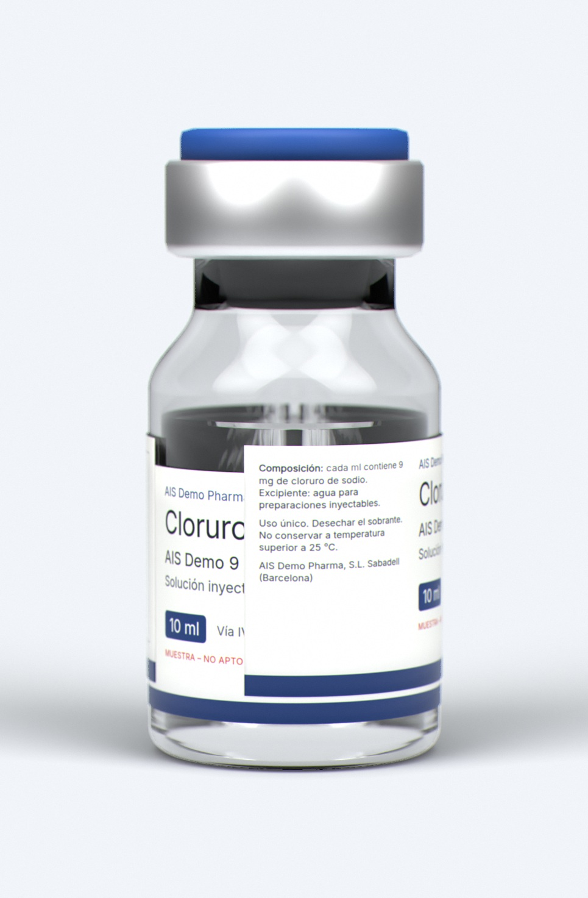
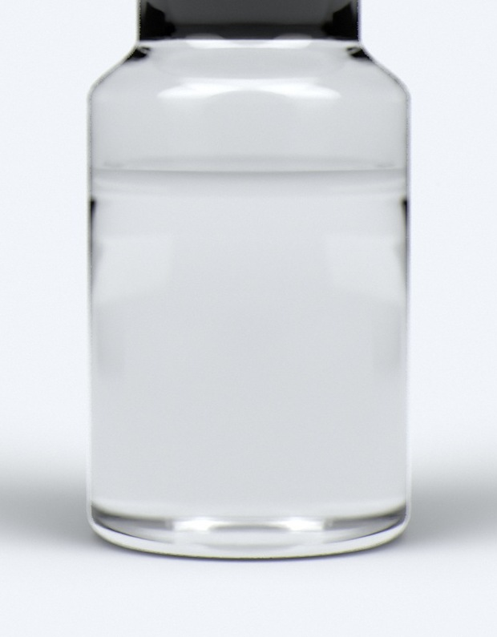

Qué inspecciona
La etiqueta del vial, en todo su perímetro
Cuatro cámaras en color revisan la presencia, la orientación y el contenido de la etiqueta de cada vial. Analiza el 100 % de la producción, hasta 18 000 envases/hora.
El mismo vial, con y sin defecto

Etiqueta correcta
Una sola etiqueta, en su posición.

Doble etiqueta
Una segunda etiqueta tapa parte de la primera.
Otros defectos de la etiqueta

Etiqueta ausente

Etiqueta desalineada

Orientación incorrecta